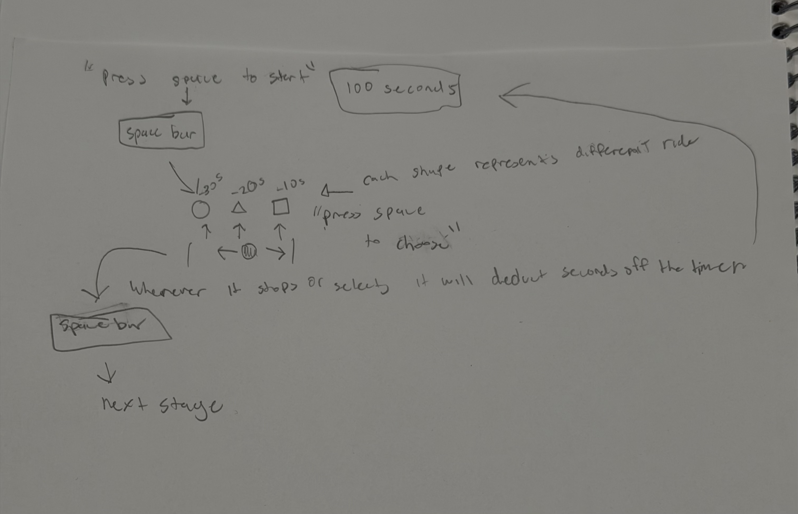
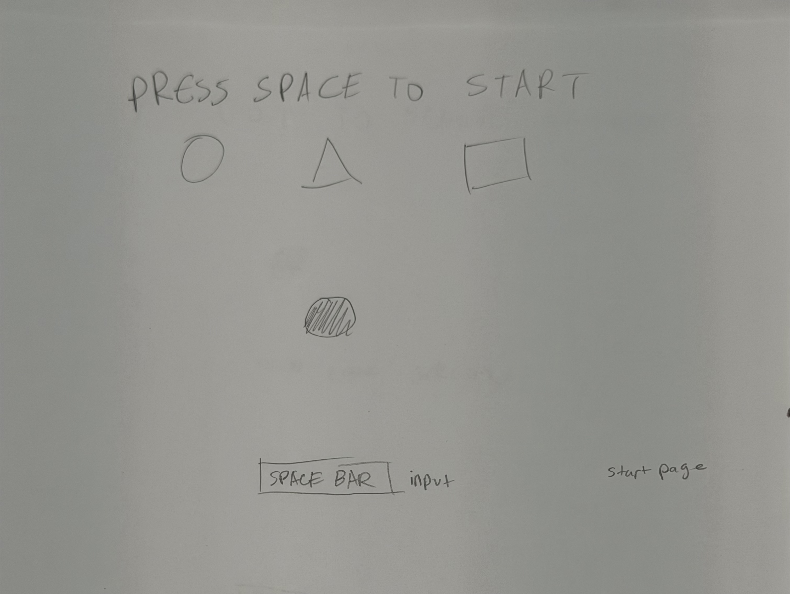
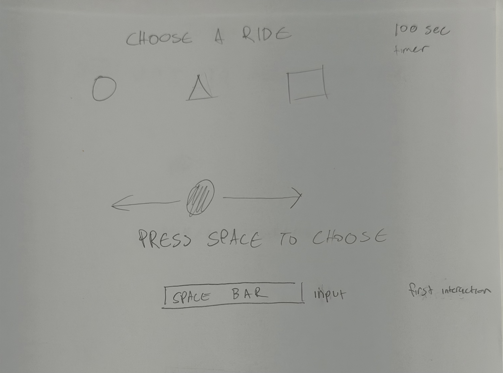
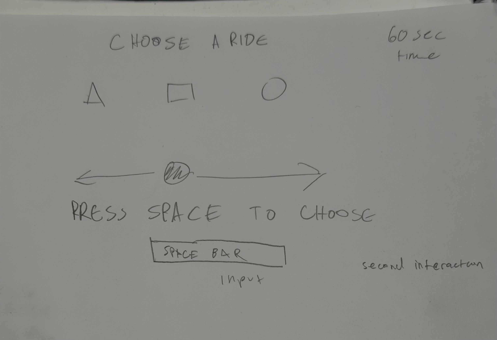
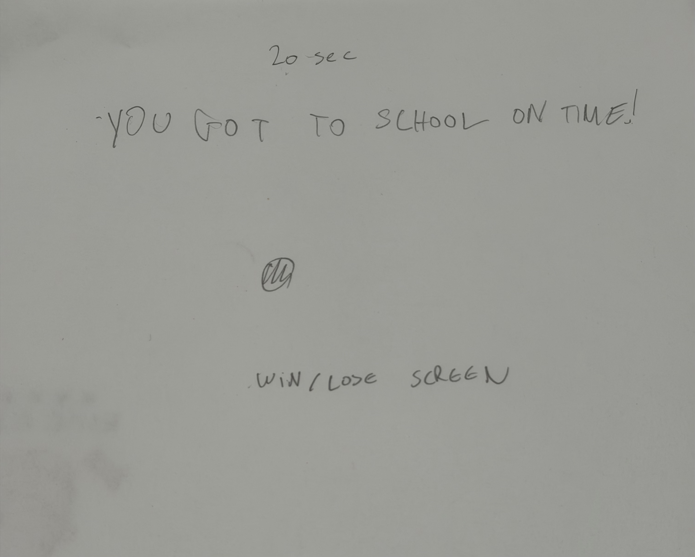

The core rule of this system is choosing the ride which is in front of the character by pressing space. The time changes over time. In the second stage after choosing the first ride the system becomes uneven. I feel like this is worth developing because it can kind of end up being sort of a game and it can be cool to make.




